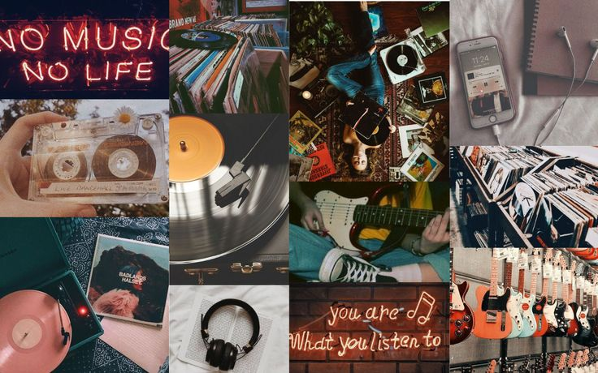

Hobbies
Music
Music is my ultimate passion. There's something magical about the way it resonates with my soul and transports me to another world. Whether I'm strumming the guitar, tinkering on the piano keys, or singing my heart out, music is my truest form of self-expression. It's a language that speaks directly to my emotions, allowing me to convey feelings that words alone cannot capture. From the soft melodies of a heartfelt ballad to the electrifying energy of a rock anthem, I find solace and inspiration in every note. Music has the power to heal, uplift, and connect people in ways that are simply extraordinary.
Reading
When I open a book, I step into a realm of infinite possibilities. Reading is not just a hobby for me; it's a journey of discovery and growth. Each page turns into a new adventure, as I delve into different worlds, meet intriguing characters, and explore profound ideas. Whether I'm engrossed in a gripping mystery, traveling through time in a historical fiction novel, or expanding my knowledge through non-fiction, reading allows me to escape reality and immerse myself in stories that touch my heart and expand my horizons. The written word has an incredible power to ignite my imagination and provoke profound thoughts, and I cherish the moments spent with a book in hand.
Travelling
Wanderlust runs through my veins, and the world is my playground. The thrill of exploring new places, immersing myself in diverse cultures, and witnessing breathtaking landscapes is an experience like no other. From the bustling streets of vibrant cities to the tranquility of remote villages, each destination has its own unique charm and hidden treasures waiting to be discovered. Traveling allows me to break free from the familiar and embrace the unknown. It broadens my perspective, challenges my preconceptions, and ignites a sense of adventure within me. Whether I'm wandering through ancient ruins, hiking majestic mountains, or simply getting lost in the winding alleys of a foreign city, each journey leaves an indelible mark on my soul.

Sports
There's a fire within me that comes alive when I engage in sports. The rush of adrenaline, the pounding of my heart, and the sweat on my brow are all testament to the sheer joy and exhilaration that physical activity brings. Whether I'm running on the track, dribbling a soccer ball, or pushing myself to the limits in a challenging workout, sports empower me both mentally and physically. It's not just about the competition or personal achievements; it's about the camaraderie and teamwork that sports foster. The bonds forged on the field, the lessons learned through victories and defeats, and the constant pursuit of self-improvement are all integral parts of my sporting journey. Sports teach me discipline, resilience, and the power of pushing past my limits, shaping me into a stronger and more determined individual.